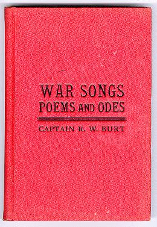

War Songs, Poems and Odes

In 1906, at the age of 83, Captain Burt collected a lifetime of verse into a single volume, War Songs, Poems and Odes, published at Peoria, Illinois, and dedicated “to my comrades of the Mexican and Civil Wars, relatives and friends.” In his preface he wrote:
In the year 1840 occurred one of the most enthusiastic and exciting political campaigns the country ever witnessed… I was then about 17 years old, and although belonging to the opposite party, the Whig songs aroused in me a poetic turn of mind that led me to writing verses of patriotic sentiment. My first effort was a description of a May party, in verse. My second (Independence Day) was composed while plowing corn and was sung by the Whig Singing Club July 4th, 1845. I wrote a great many patriotic songs during the Civil War, that had a wide circulation in the Army. I am now 83 years old, and as life is drawing to a close, I desire to leave a souvenir of my works to my beloved Comrades of the War, to my devoted relatives, and many kind friends who may wish to keep these pages in memory of my life. — R. W. Burt, 1906.
The complete 225-page volume is available here as a full-text scan (Download the PDF, ~26 MB) and may also be read online at the HathiTrust Digital Library. The songs and poems of the Civil War section are reproduced as separate pages on this site (linked below).
Table of Contents
Songs of the Civil War
- Battle of Arkansas Post
- Licking Volunteers at the Battle of Fort Donaldson
- Mary Roy
- Meditations on Atlanta Battle Field
- Our Flag is There
- Phil. on Picket in Dixie
- General Logan and the Fifteenth Army Corps
- Gen. Sherman and His Boys in Blue
- Jeff. Davis in Petticoats
- Sherman's Farewell to His Boys in Blue
- Soldiers Homeward Bound
- Strike for Liberty
- The Boys in Blue
- The Dawn of Peace
- The Old Flag and Yankee Doodle
Songs of the Mexican War
- Brave Boys of Coshocton
- The Volunteer's Return
- Reunion of Mexican War Veterans
Political Songs
- Lincoln and Liberty
- Lincoln Wide-Awakes
- One Country and One Flag
- That Rail
- Welcome to General Logan
Patriotic Songs and Odes
- A National Song
- Grant is Dead
- In Memoriam
- McKinley's Dedication of Soldiers' Monument
- Memorial Day
- Our Country and Flag
- The Dying General
- Unknown Graves
Sentimental
- Is Life Worth Living?
- Just as It Is
- Ode on Spring
- School Day Reveries
- The Beautiful Dawn of Day
- While we Live, Let us Live
Humorous
- Cherry Tree Lye
- Decidedly Hot
- Glen Oak
- Old Grumble
- Peoria's Fragrant Breezes
- Second-Hand Clothes
Bryner Post Songs
- Bryner Post No. 67, G. A. R.
- Bryner Post Reunion
- Looking Back
Character Sketches
- Tubbs
- Jake Swett
- Jim Sykes
- John Jarvis
- Little Jim Cole
- Lucy Dare
- Lysander Quirk
- Mother Shipton's
- Old Tony Fox
- Peter Snow and His Mary Ann
- Richard Wray
- Sergeant Blow
- Simon Rock
Boyhood Poems
- Fourth of July, 1845
- Independence Day
- Orangeville May Party
- The Snow Bird
Family Poems
- Alva in Heaven
- A Soldier's Dream
- Come, Pa, Let Us Go Home
- Eighty To-day
- My Child, the Clouds are Thin
- My Father's Reflection on His 80th Birthday
- My Mother's Grave by Maumee
- My Soldier Father
- Sixty To-day
- The Portrait on the Wall
- Wife, Children and Home
Religious
- Our Father Found
- The Lost Found
- The Way of the Transgressor is Hard
- Think of It
- Universalist Reunion
- Vision of Heaven
- What is Truth?
- Which Creed?
Miscellaneous
- An Indignant Protest
- A Little Too Thin
- Death of Maude
- Death of President McKinley
- Freedom's Land
- Fremont Pioneers
- Forty Years Ago
- Going to the Show
- Historical Centennial Poem
- My George in Heaven
- Our Lawyers
- Ringold
- Sister Laurie
- The Burt Reunion — 1899
- The Burt Reunion — 1900
- The Fifteenth Army Corps
- The First Thanksgiving
- The Old Settlers
- Tired of Life
- Twenty Years Ago
- Two Little Girls I Love
- Veterans, Welcome
- Who Shall Rule?
Source: Captain R. W. Burt, War Songs Poems and Odes, J. W. Franks & Sons, Peoria, Illinois, 1906. Scanned copy digitized by Google from the Princeton University Library collection, made available through the HathiTrust Digital Library (item njp.32101066121003).